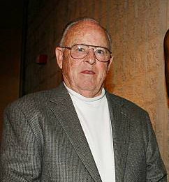

| Oscar Nominations | ||||
|---|---|---|---|---|
| Ceremony | Film | Category | Role | Result |
| 65th Academy Awards Oscars 1993 |
Unforgiven | Sound | Sound Engineer | Nominated |
| 61st Academy Awards Oscars 1989 |
Bird | Sound | Sound Engineer | Won |
| 60th Academy Awards Oscars 1988 |
Lethal Weapon | Sound | Sound Engineer | Nominated |
| 59th Academy Awards Oscars 1987 |
Heartbreak Ridge | Sound | Sound Engineer | Nominated |
| 58th Academy Awards Oscars 1986 |
Ladyhawke | Sound | Sound Engineer | Nominated |
| 55th Academy Awards Oscars 1983 |
Tootsie | Sound | Sound Engineer | Nominated |
| 53rd Academy Awards Oscars 1981 |
Altered States | Sound | Sound Engineer | Nominated |
| 52nd Academy Awards Oscars 1980 |
The Electric Horseman | Sound | Sound Engineer | Nominated |
| 49th Academy Awards Oscars 1977 |
All the President's Men | Sound | Sound Engineer | Won |
| 48th Academy Awards Oscars 1976 |
Bite the Bullet | Sound | Sound Engineer | Nominated |
| 46th Academy Awards Oscars 1974 |
Paper Moon | Sound | Sound Engineer | Nominated |
| 42nd Academy Awards Oscars 1970 |
Marooned | Sound | Sound Engineer | Nominated |

Les Fresholtz